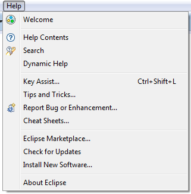
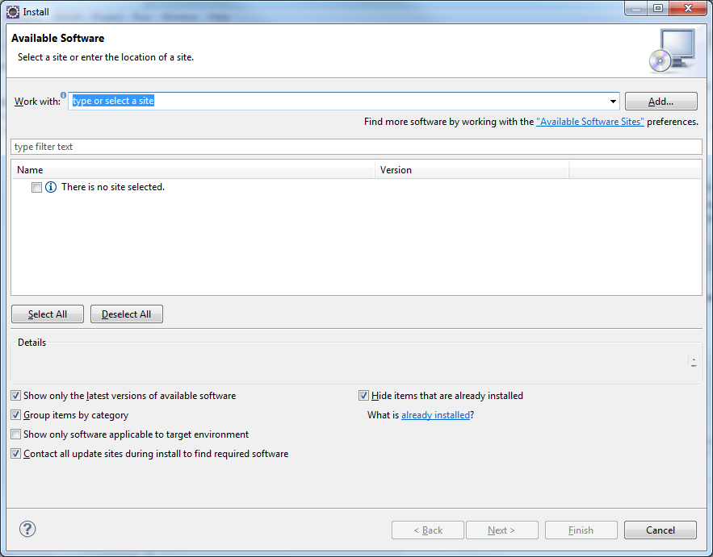
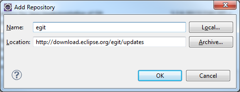
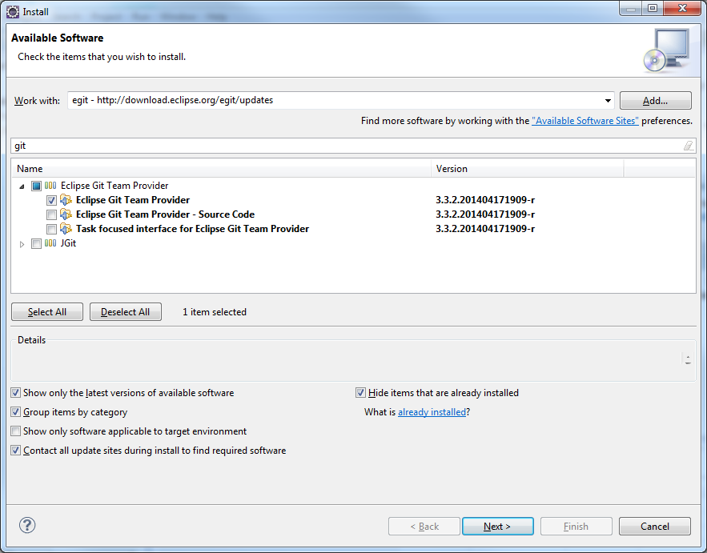
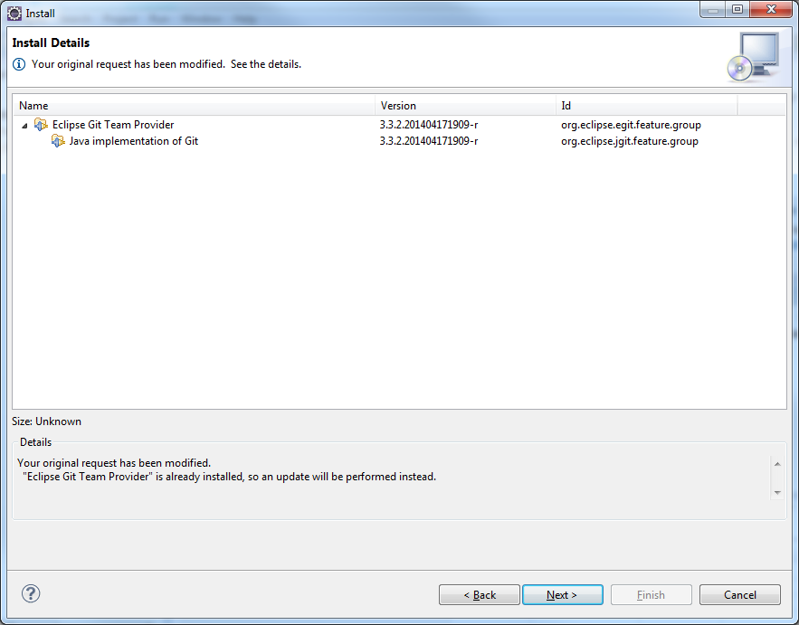
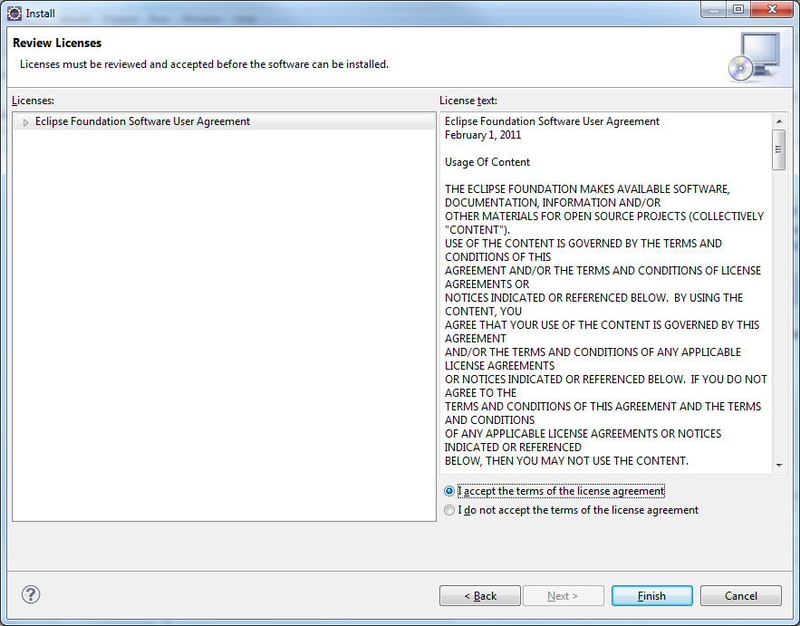
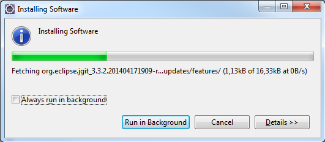

Lisäosien asennus

- Uusien lisäosien asentaminen tapahtuu valitsemalla Help-valikosta Install New Software

- Aukeavasta ikkunasta voidaan mm. valita mistä paikasta uutta lisääosaa haetaan, ja voidaan myös lisätä osoite(repository) jossa lisäosa sijaitsee painamalla Add-nappulaa

- Lisätään uusi repository painamalla Add-nappulaa
- Halutaan asentaa git-tuki Eclipselle ja sitä varten tarvitaan repository osoitteesta "http://download.eclipse.org/egit/updates"
- Kun tiedot syötetty, painetaan Ok

- Klikkaamalla Work with -kohdasta valitaan mistä repositorystä lisäosaa haetaan. Jos valitaan --All Available Sites--, niin lisäosaa haetaan kaikista syötetyistä repositoryistä
- Juuri syötetty repository on automaattisesti valittuna
- Kun repository valitaan, saattaa tietojen hakeminen kestää hetken. Varsinkin kun valitaan kaikki sivustot
- Asennetaan git-tuki syöttämällä "git" hakukenttään. Tässä saattaa myös kestää
- Eclipse Git Team Provider on se, joka halutaan asentaa tällä kertaa. Valitaan se ja painetaan Next

- Ohjelma laskee valmiiksi tarvitaan jotain muita lisäosia/kirjastoja asentaa valitun lisäksi
- Painetaan Next

- Lopuksi pitää vielä hyväksyä lisenssitiedot. Painetaan Yes kaikkiin mahdollisiin kohtiin
- Painetaan Finish

- Eclipse alkaa lataamaan ja asentamaan lisäosia
- Asennuksen jälkeen avautuu ikkuna, joka kysyy käynnistetäänkö Eclipse uudelleen asennuksen viimeistelemiseksi. Painetaan Yes
- Näin lisäosa on asennettu